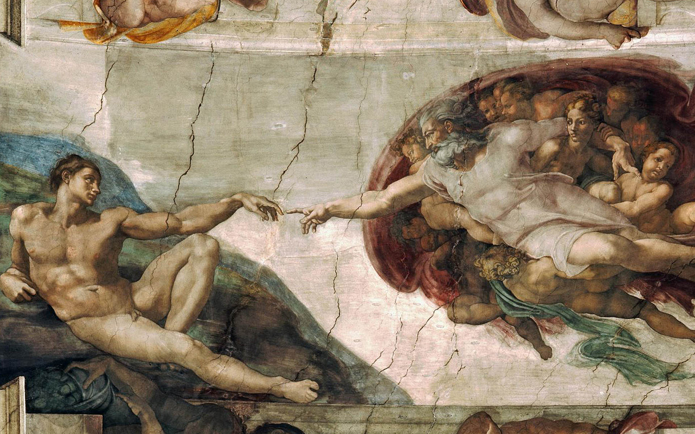
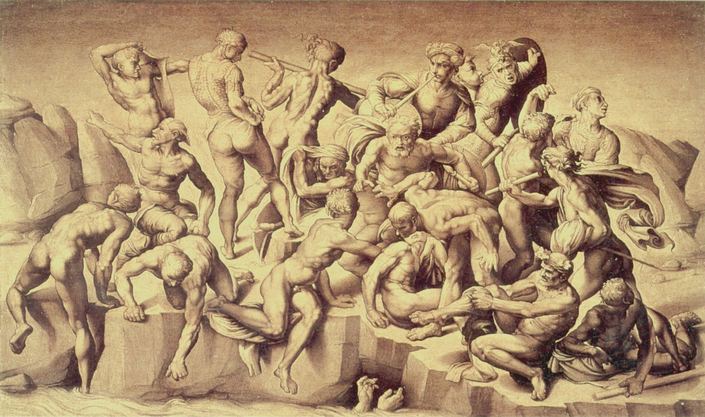

Ukończenie tego fresku zajęło Michałowi Aniołowi 7 lat, czyli około 450 sesji malarskich. Do dzisiaj Sąd Ostateczny uważa się za największe stworzone przez jednego artystę dzieło w historii. To ogromne malowidło przedstawia ponad 400 postaci, rozmieszczonych w dwóch częściach: niebiańskiej, która została podzielona na trzy strefy na górze fresku, oraz ziemskiej w jego dolnej części.

Sąd Ostateczny - Kaplica Sykstyńska, Watykan

„Stworzenie Adama” artysta namalował w środkowej części sklepienia Kaplicy Sykstyńskiej. Jego wizja początków ludzkości znacząco różniła się od tej propagowanej w średniowieczu, gdzie ludzie postrzegali siebie jako nędznych grzeszników. Zamiast tego Michał Anioł namalował Adama z ciałem atlety równie szczegółowo co Boga, podkreślając w ten sposób ówczesny trend antropocentryzmu w sztuce.
Stworzenie Adama - Kaplica Sykstyńksa, Watykan

Bitwa pod Casciną to planowany fresk Michała Anioła, który miał znajdować się w Sali Wielkiej Rady (Salone dei Cinquecento) we florenckim Pałac Vecchio. Buonarroti nie zrealizował samego fresku, jednakże wykonał w latach ok. 1505-1506 karton do niego, który później zaginął
Bitwa pod Casciną - Pałac Vecchio